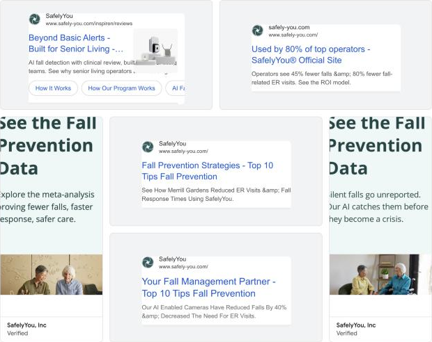
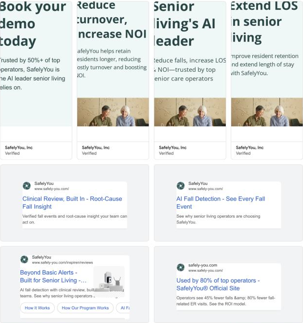

Unlisted · Growth plan prepared by Simonne Piriz
Growing SafelyYou
How I'd approach the first 90 days and first year
A starting point built from public research: SafelyYou's live Google ads, search demand, site traffic estimates, and published outcomes. I'd validate every piece with the team in the first 30 days.
- Where growth comes fromMost growth will come from ABM, current customers, and Halo. Search demand is small, so paid search focuses on buyers who are already looking.
- Four levers, one yearEach lever is sequenced from day one to month twelve, with a number the team reviews every month.
- A small team that moves fastClaude handles the repetitive work, and a person approves every step before anything reaches a customer.
The plan on one page
Four growth levers, from day one to month twelve
| Lever | Days 1 to 30 | Days 31 to 60 | Days 61 to 90 | Months 4 to 6 | Months 7 to 12 |
|---|---|---|---|---|---|
| Grow current customersWatch: expansion pipeline and communities added | Map the communities in each customer's portfolio that aren't on SafelyYou yet | Send the first results reports to regional leaders | Expansion and upgrade offers for top customers | Quarterly results reports for every customer | Customer advisory group and co-hosted case studies |
| Win new operators with ABMWatch: meetings with Tier 1 accounts | Agree on Tier 1 criteria and the account list with sales | First wave: operator one-pagers, outreach sequences, and direct mail | Outreach triggered by openings, acquisitions, and new leaders | Executive dinners at industry events and the first quarterly Falls Index* | Extend to Tier 2 accounts with what worked |
| Launch Halo to new buyersWatch: Halo pipeline from operations and finance | Messaging for operations and finance, built with product and sales | An eCall replacement guide and an ROI calculator | A webinar with an early Halo customer | Halo for new buildings: developer and architect outreach | Halo case studies for each buyer |
| Make paid and the website convertWatch: cost per qualified demo and brand search trend | Focus search on brand, competitor, and high-intent terms | Proof-point headlines by buyer and a demo offer for past visitors | Meeting booking right after the demo form | Comparison pages and the first conversion tests | A Falls Index* hub that earns organic search |
| Claude workflowsWatch: speed to follow-up and hours saved | Account research briefs | Operator one-pagers at scale and follow-up alerts | Search term reviews and a weekly growth summary | Results report drafts from approved metrics | Refine and expand with the team |
Every workflow is reviewed by a person before anything reaches a customer or spends money.
*Falls Index: an idea to explore. A quarterly benchmark of fall trends by state and care type, built from SafelyYou's research and de-identified outcomes data, pending a data and privacy review.
Signature ideas
Four ideas I'd bring to the plan
Each idea uses something SafelyYou already has: its outcomes data, its customers, its research, or Halo.
A one-page plan for every target operator
Clay could be used to pull each operator's public details, like community count, regions, and recent news. A one-pager would then be drafted on what SafelyYou could mean for that operator, using SafelyYou's published outcomes, and reviewed before it goes out. It would feed outreach, direct mail, and sales meetings.
From my experience: at HealthSnap I ran ZoomInfo enrichment with an always-on workflow that moved contacts into campaigns once they met set criteria. At VendGogh, Claude drafts and I approve before anything goes out.
Results reports for current customers
Each customer's regional leaders would see their own outcomes at the communities already using SafelyYou: falls, ER visits, and length of stay. The report would then make the case for the communities that aren't on SafelyYou yet. SafelyYou's expansion announcements show this is already how growth happens, and the reports would make it a repeatable program.
From my experience: at HealthSnap I built reporting from scratch, including revenue by source and a lead-to-opportunity funnel. At Harness Giving, feature launch programs raised customer operations satisfaction 11%.
A quarterly Falls Index*
An idea to explore
The Cost of Senior Care research and de-identified data from more than 1,000 communities could become a regular benchmark by state and care type. Trade media covers data, sales would get a reason to reach out every quarter, and each edition would add content that organic search can find.
From my experience: at Bonum Health I ran PR and trade media, writing releases, pitching industry outlets, and managing publications like Drug Store News.
Halo for new buildings
Every new or renovated community needs an eCall system. Reaching developers and architects through the construction pipeline in trade press and industry data could get Halo specified before a building opens.
From my experience: at PrimaSun I led go-to-market for two consumer health apps from pre-launch through initial growth. At VendGogh I mapped a niche industry's trade press and associations to reach buyers where they already look.
Also worth exploring: a family opt-in kit for communities, co-marketing with partners like Yardi and NOTIFY, and LinkedIn Thought Leader Ads from customer executives.
Search and ads
Where buyers search
Bid on the few buyer searches, and block the consumer ones.
Search demand for this category is small. Average monthly Google searches in the US, October 2025 to September 2026, from Google Keyword Planner. Google reports ranges, shown here as bars on a log scale.
Buyer searches
Consumer and general searches
Show the numbers as a table
| Search | Group | Monthly searches | Suggested approach |
|---|---|---|---|
| safelyyou | Buyer: brand | 1K to 10K | Brand campaign, exact match |
| inspiren | Buyer: competitor | 1K to 10K | Competitor campaign |
| vayyar care | Buyer: competitor | 100 to 1K | Competitor campaign |
| assisted living technology | Buyer | 100 to 1K | Phrase match |
| fall detection system, fall monitoring system, ai fall detection, senior living technology | Buyer | 10 to 100 each | Phrase and exact match |
| fall detection for assisted living, memory care fall detection | Buyer | Too few to report | Broad match with a strong negative list |
| fall prevention, fall risk assessment, bed alarms | Consumer and general | 1K to 10K each | Negative keyword, with blog content for the first two |
| medical alert, life alert | Consumer and general | 10K to 100K each | Negative keyword |
Public traffic estimates point the same way: about 99% of SafelyYou's search visits are organic, and most come from people searching the brand name (Similarweb estimates, September 2026).
Ads today
What's running, and how I'd tune it
Google's Ads Transparency Center shows 12 live SafelyYou ads in the US, 6 search and 6 display, last shown October 25 and 26, 2026. Search covers the brand, a competitor campaign, AI fall detection, clinical review, and fall prevention. Display leads with NOI, length of stay, turnover, and the fall prevention data.


- Keep search spend on brand, competitor, and high-intent searches, and send broad fall prevention searches to blog content, since families, caregivers, and students make most of them.
- Use one set of proof points across every ad, taken from the current Solutions page.
- Show "Book your demo today" to past visitors, and lead new audiences with the data.
- Match display themes to each buyer: NOI and length of stay for executives, fall data for clinical leaders, and Halo for operations.
- Send CRM stage changes back to Google Ads as conversions once there's enough volume, so bidding learns which clicks become qualified pipeline.
- Mirror winning campaigns in Microsoft Ads, and raise bids for searchers whose profiles show healthcare roles.
Headlines from SafelyYou's own proof points
Suggested headlines and descriptions for each persona in the ABM program.
| Persona | Headlines | Description |
|---|---|---|
| Executives and finance | Up to $3K NOI Per Resident Residents Stay 174 Days Longer Trusted by 1,000+ Communities | Up to $3K more NOI per resident and 174 more days of stay. See the ROI model. |
| Clinical leaders | 45% Fewer Falls in Year One Cut Fall ER Visits by 80% 82% Fewer Repeat Falls | 45% fewer falls in year one and 80% fewer fall-related ER visits. See the data. |
| Operations (Halo) | AI eCall for Senior Living Replace Your Old eCall System Care Time Tracking, No Badges | Halo combines fall detection, check-ins, and care-time tracking in one AI eCall platform. |
From my experience: I've run Google Ads for nationwide clinical trial recruitment at ClinEdge, telemedicine at Bonum Health, and nonprofit SaaS at Harness Giving, and I planned paid media across Google Search, YouTube, Meta, and Reddit at PrimaSun.
How we'd know it's working
A few numbers, reviewed every month
A short list the team agrees on and uses to decide where the next dollar goes.
- Pipeline created, split between new operators and expansion
- Meetings with Tier 1 accounts
- Win rate on marketing-sourced opportunities
- Cost per qualified demo
- Speed to first follow-up
- Brand search trend
What I'd confirm in the first 30 days
- Current traffic, demo volume, and how the team defines an SQL and an opportunity
- Pricing and packaging, and how Halo is sold
- Which customers have the most room to expand
- What lives in the CRM and list-building tools today
- Partner terms before any co-marketing
- Data rules for anything customer-facing, with de-identified data only
How I built this
My calls, with Claude doing the legwork
What I brought
- The questions worth asking for a senior living buyer
- Which data matters, and what it means
- The strategy, the priorities, and the 90-day order
- Judgment calls, like keeping spend on buyer searches and using proof points as headlines
- Checking every number before it went live
What Claude did
- Pulled SafelyYou's live ads from Google's Ads Transparency Center
- Ran 39 keywords through Google Keyword Planner
- Read SafelyYou's site, press releases, and public traffic estimates
- Drafted and built this page for my review
Claude made the research faster. The strategy and every call on this page are mine.
Thank you for reading
I'd love to build this with the team.
Sources, all public or from my own accounts:
- Google Ads Transparency Center: safely-you.com, checked October 27, 2026
- Google Keyword Planner, US, October 2025 to September 2026, pulled October 27, 2026
- Similarweb traffic estimates, September 2026
- SafelyYou Solutions page and newsroom